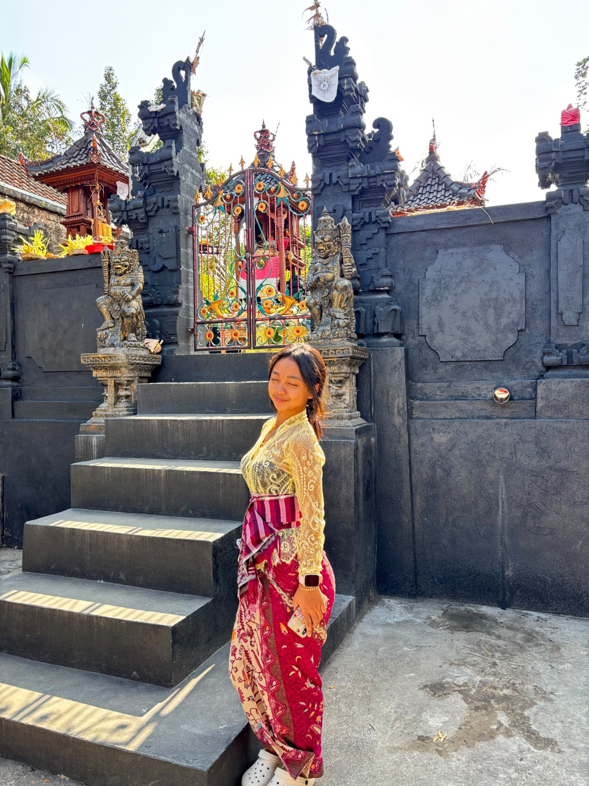
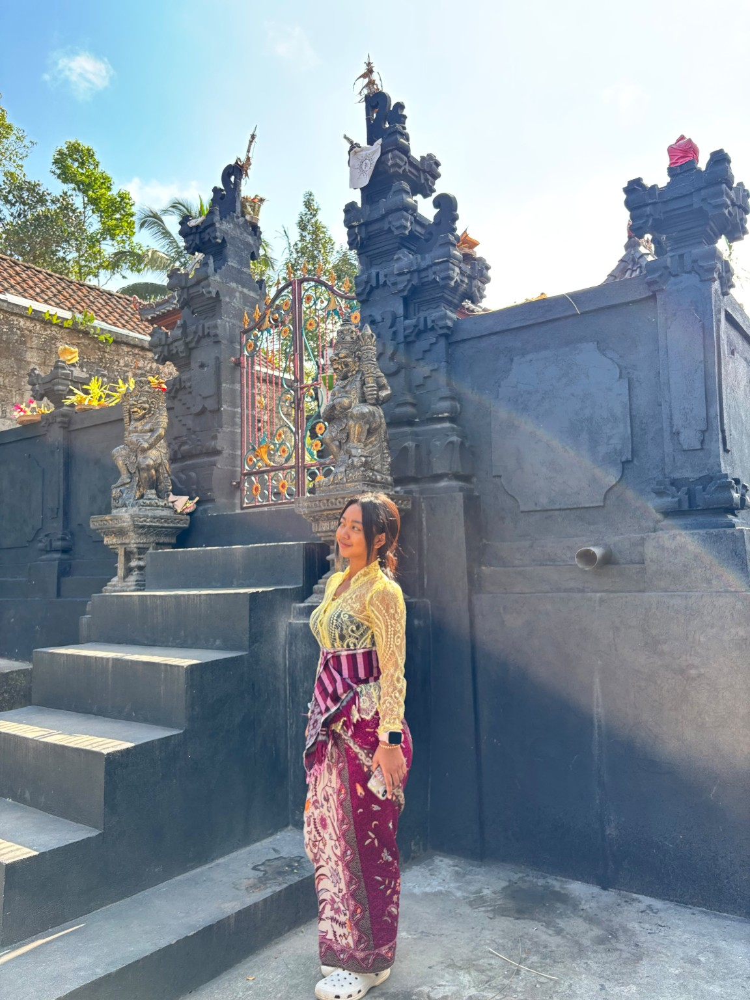

Temukan ilmu,
luaskan dunia.
Selamat datang di website Perpustakaan Graha Sastra Kertha Langhu. Jelajahi koleksi bacaan, kenali layanan, dan temukan kegiatan literasi sekolah.
Jelajahi katalog ↗Profil perpustakaan
Profil perpustakaan
Mengenal Perpustakaan SMA Negeri 1 Banjarangkan.
Graha Sastra Kertha Langhu
Perpustakaan SMA Negeri 1 Banjarangkan berdiri pada 25 Juli 1992. Perpustakaan berada di gedung barat, sebelah barat Laboratorium Biologi dan sebelah utara ruang BK.
Motto: Vidya Granthalaya Jnanasya Nivasah
Visi perpustakaan
Memberdayakan potensi perpustakaan sekolah, berbudaya literasi dan unggul dalam prestasi.
Misi perpustakaan
Enam misi sebagaimana tercantum dalam profil perpustakaan.
Memperluas dan memperkaya koleksi agar warga sekolah memiliki akses ke sumber pengetahuan yang mendukung pembelajaran dan penelitian.
Mengembangkan minat membaca dan keterampilan literasi melalui kegiatan yang merangsang pemikiran kritis, kreativitas, dan diskusi.
Menciptakan lingkungan untuk kelompok studi, berbagi pengetahuan, dan proyek penelitian bagi komunitas sekolah.
Memanfaatkan teknologi untuk meningkatkan akses dan pemanfaatan perpustakaan, termasuk sistem manajemen online dan sumber daya digital.
Mendukung pencapaian akademik dengan menyediakan sumber daya dan dukungan bagi peserta didik.
Memperluas dukungan dan partisipasi komunitas sekolah, orang tua, serta mitra eksternal.
Ruang dan fasilitas
Fasilitas yang tercantum dalam profil perpustakaan.
AC dan kipas angin.
2 unit komputer untuk pengunjung, serta 1 unit komputer dan printer untuk petugas.
Tape recorder, LCD, dan projektor.
Meja panjang, kursi, meja study carrel, area belajar mandiri, dan lesehan.
Rak koleksi buku dan rak referensi.
Layanan perpustakaan
Layanan dan strategi inovasi yang tercantum dalam profil perpustakaan.
Layanan yang ramah, mudah, menarik, dan menyenangkan.
Program membaca di perpustakaan secara terjadwal.
Ruang diskusi dan pertemuan untuk memperkaya wawasan.
Mendorong warga sekolah menyumbangkan buku berkualitas.
Sertifikat untuk pengunjung, peminjam, dan penyumbang buku teraktif.
Berbagai lomba untuk menumbuhkan minat dan kreativitas.
Wadah karya siswa dan guru.
Kolaborasi dengan perpustakaan lain.
Pemanfaatan aplikasi teknologi dalam administrasi perpustakaan.
Pengembangan perpustakaan
Program jangka pendek
Program jangka panjang
Katalog buku
Telusuri koleksi perpustakaan melalui pencarian, kategori, dan halaman katalog.
Buku favorit
Buku yang kamu simpan dari katalog akan muncul di sini pada perangkat ini.
Buku populer
Buku dengan ulasan dan rating terbanyak dari pembaca.
Kegiatan perpustakaan
Dokumentasi kegiatan literasi perpustakaan.

Galeri kegiatan perpustakaan.

Galeri kegiatan perpustakaan.
Karya pemustaka
Ruang apresiasi karya dan kreativitas warga sekolah.
Informasi perpustakaan
Informasi kunjungan perpustakaan.
Jam operasional
Kontak & lokasi
Struktur pengelola
Nama dan jabatan berdasarkan dokumen profil perpustakaan.